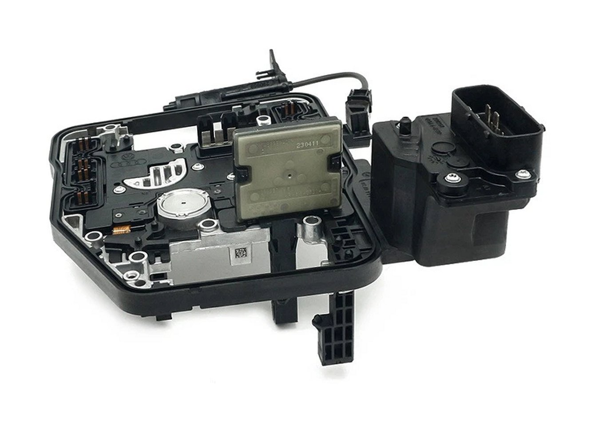
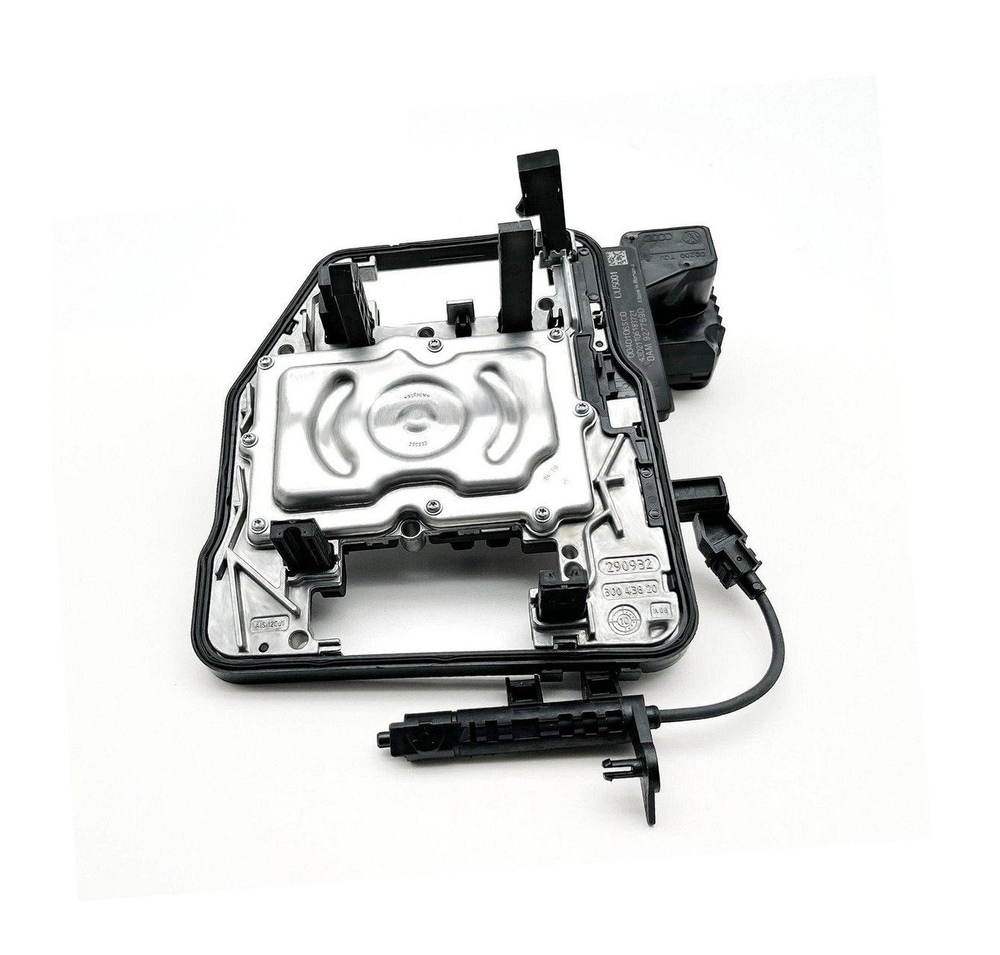
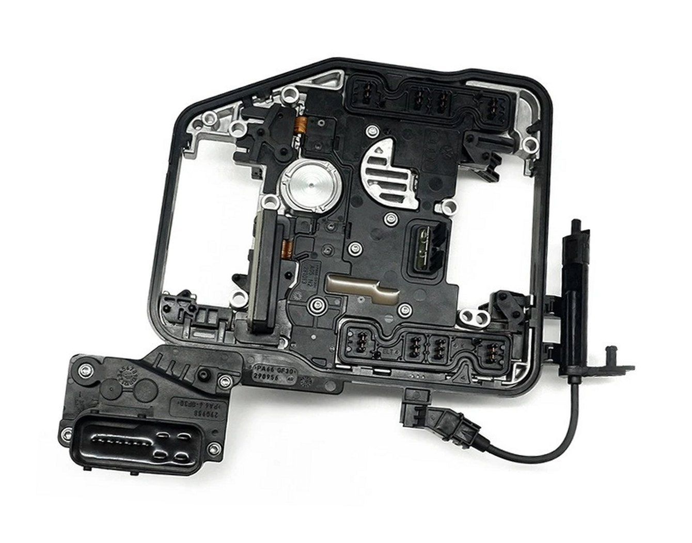

Free testing, component-level repair, full bench test and a 2-year warranty. The right choice if the car is off the road but you are not against the clock.
Serving the UK and Europe
DQ200 DSG7 Mechatronic TCU Repair
No communication with the transmission control unit on a DQ200 DSG7 gearbox, also known as the TCM, gearbox ECU or mechatronic unit, is what we do all day, every day. No comms, U0101 or 01315, and the intermittent fault that drops out once the unit gets hot. Component-level repair of your original unit, bench tested and returned with a 2-year warranty. Units arrive from across the UK, Ireland and mainland Europe.
No need to diagnose it or message first. We test every unit free, no fix no fee.
Reach us before 12:00 noon on a working day and your unit is tested, repaired and back with the courier the same afternoon. Same repair, moved to the front of the bench queue.
Local to the West Midlands? Book a slot, bring the removed unit to our Halesowen workshop, and we stop what we are doing and repair and test it within the hour while you wait. Call ahead on 07833 823384.
Free testBench tested before repair
2 yearsWarranty on every completed repair
No repairNo fee, testing is free
UK & EuropePostal service, tracked both ways
Does this sound like your car?
The fault we repair more than any other.
Most DQ200 units that reach us are describing the same thing in slightly different words. If any of the below matches your car, you are in the right place.
In your words
- Drives fine from cold, then loses drive or comms once it warms up, and comes back after it cools
- Drives for a few miles, then the gearbox drops out
- Left overnight it works again, then fails after a short drive
- No communication with the TCM or TCU on the scan tool, U0101 or 01315 on a VAG tool
- PRNDS flashing on the dash, then the car will not start
- Starts again after sitting a while, then the fault returns
- Stuck, will not select drive or reverse, limp or emergency mode
- Power, earths and CAN wiring all checked good, but the unit still drops off
Then it is almost certainly the TCU
As the mechatronic unit heats up, an internal connection inside the transmission control unit goes intermittent and the module drops off the car's network. It logs no communication, the dash flashes, and the car often will not restart until it cools. Left alone it always gets worse, until the unit fails for good and strands the car.
When power, earth and CAN wiring have been confirmed good, this symptom strongly points to the electronics inside the TCU rather than the whole gearbox. We repair your original control unit, so the vehicle-specific coding remains with the car.
You do not need to diagnose it any further. Send the unit in and we test it free, with no charge if we cannot repair it.
What you get
Clear turnaround. No repair, no fee.
Standard repairs are normally completed in 2 to 3 working days from receipt. Same-Day Priority moves a qualifying unit to the front of the queue when it reaches us before 12:00 noon. Every completed repair is backed by a 2-year warranty.
Received before 12 noon, dispatched the same working day.
Choose Same-Day Priority and get the unit to us before 12:00 noon on a working day. It is tested, repaired and back on the courier that same afternoon when the confirmed fault is one we support and the unit has no additional damage.
Courier transit time is separate. If inspection reveals previous repair damage, corrosion or another fault that changes the job, we contact you before carrying out chargeable work.
Typical turnaround: 2 to 3 working days.
The standard service is normally repaired, tested and dispatched within 2 to 3 working days of the unit reaching us. It is the right choice when the car is off the road but you do not need same-day bench priority.
Testing is free. If the supported fault cannot be repaired, there is no repair charge. You only cover carriage and any return shipping you arrange.
Turnaround starts when the unit reaches the workshop and excludes courier transit time. Units with previous repair attempts, corrosion or additional damage can take longer, and we will contact you if inspection changes the scope. Our no-repair-no-fee policy applies when we cannot complete the supported repair.
Two years on the repair, unlimited mileage.
Every unit leaves here bench tested for communication and correct function. If the fault we repaired returns within 24 months, send it back and we'll put it right at no charge for the work.
Carriage both ways stays with the customer, as with the original repair. The warranty covers the repair we carried out, not unrelated new faults, hydraulic or mechanical failure elsewhere in the gearbox, later water ingress, or damage from incorrect refitting or missed basic settings.
Repair quality
The part inside matters.
Two repaired control units can look identical from the outside. The quality of the parts, materials and workmanship inside is what decides whether the repair lasts.
Premium, traceable repair components
We do not base repairs around anonymous lowest-cost clone parts. Where components or repair materials are replaced, we use premium, traceable parts and automotive-grade materials selected for long-term reliability.
We repair your original TCM rather than swapping in an unknown board, so the vehicle-specific data stays with the unit wherever the original data remains intact.
Backed for 2 years
Every completed DQ200 electronics repair carries a 2-year unlimited-mileage repair warranty. That warranty covers the fault and work we carried out, not unrelated hydraulic, mechanical, water-ingress or vehicle-side faults.
The aim is simple: repair it once, test it properly, and send it back ready to refit.
Turnaround
Out one day, back the next.
Worried about being without the car for weeks? You won't be. On Same-Day Priority, most UK units are repaired the same day they arrive and posted straight back, tracked both ways.
You post it
Send your unit with a next-day tracked courier. It only takes the mechatronic off, not the whole gearbox.
We repair it
It arrives, we test and repair it the same day on Same-Day Priority, and it is back on the courier that afternoon if it reaches us before 12:00.
It is back with you
Refit, run the gearbox basic settings and adaptation, and drive.
Most UK customers have their unit back within 2 to 3 days of posting. Only the mechatronic comes off, so the car and gearbox stay put and you are off the road only for that short window. If you would rather not remove it yourself, any competent garage or auto electrician can drop it out and refit it. Local to the West Midlands? Bring it in and wait, and it's back in your hands within the hour.
Symptoms and fault codes
Is it your TCU, or is it the hydraulics?
The DQ200 mechatronic fails in two completely different ways and the fix is different for each. Read your codes before you spend anything.
Symptoms we repair
- No communication with the TCU or TCM on a scan tool, U0101 or 01315 on a VAG tool
- Car will not start, or starts and will not select drive
- Complete loss of drive with no warning
- Gearbox or transmission warning light on permanently
- PRNDS flashing on the dashboard
- Gear indicator blank or missing
- Comms or drive drop out once the unit gets up to temperature, then return once it cools
- Repeated 30-amp mechatronic fuse failure
- Other modules logging lost communication with the gearbox
- Intermittent faults that clear on an ignition cycle
Codes we commonly see with this failure
U0101 & 01315
Lost communication with the transmission control module. U0101 on generic scan tools, 01315 on VAG tools. Both are the same fault.
P1604
Internal control module malfunction
P0562
System voltage low. This can be caused by the vehicle supply as well as the TCU, so battery, power and earth checks still matter.
P0600 and P0700
Communication or transmission-system flags that can accompany the fault, but are not enough on their own to condemn the TCU.
Codes that are not a TCU fault
These are pressure and pump faults on the hydraulic side of the mechatronic. Sending us the unit will not fix them, and we will tell you so rather than take your money. Message us your codes and we will point you at the right repair, even if it is not us.
P17BF
Hydraulic pump protection, maximum limit reached
P189C
Function restricted, insufficient pressure build-up
P0841 and P1895
Transmission fluid pressure sensor range, pressure drop
Coverage
Part numbers and vehicles we cover.
Check the label on your unit against the list below. If your number is not here, send a photo of the label and we will confirm before you post anything.
0AM 927 769 variants
0AM927769D0AM927769E
0AM927769F0AM927769G
0AM927769H0AM927769K
0AM927769N0AM927769P
0CW 927 769 variants
0CW927769B0CW927769C
0CW927769D0CW927769E
0CW927769G0CW927769H
Also seen labelled 0AM 325 025 and 0CW 300 048 on complete mechatronic units. A photo of the label is always the fastest way to confirm.
Vehicles fitted with the DQ200 DSG7
| Make | Model | Years |
|---|---|---|
| Audi | A1 | 2010 to 2020 |
| Audi | A3 and S3 | 2007 to 2019 |
| Audi | TT | 2008 to 2014 |
| Audi | Q2 | 2016 to 2021 |
| Cupra | Formentor and Leon | 2020 to 2023 |
| Seat | Ibiza | 2009 to 2018 |
| Seat | Leon | 2011 to 2021 |
| Seat | Altea | 2011 to 2014 |
| Seat | Arona and Ateca | 2017 to 2024 |
| Skoda | Fabia | 2010 to 2015 |
| Skoda | Octavia | 2010 to 2021 |
| Skoda | Superb | 2011 to 2021 |
| Skoda | Yeti, Kamiq and Karoq | 2011 to 2021 |
| Skoda | Rapid and Roomster | 2010 to 2019 |
| Volkswagen | Golf Mk6 and Mk7 | 2008 to 2019 |
| Volkswagen | Polo | 2009 to 2021 |
| Volkswagen | Passat | 2009 to 2017 |
| Volkswagen | Caddy | 2010 to 2018 |
| Volkswagen | Jetta | 2011 to 2017 |
| Volkswagen | Touran | 2009 to 2018 |
| Volkswagen | Beetle | 2012 to 2016 |
| Volkswagen | Scirocco | 2009 to 2017 |
| Volkswagen | T-Roc and T-Cross | 2017 to 2023 |
Process
How the service works.
No need to message back and forth. Check it qualifies, post it in, and we take it from there.
Before you post it, a 20-second check
This saves us both a conversation. If all three match, just send it in, no message needed.
- Part number is a 0AM 927 769 or 0CW 927 769 (check the label). Not on the list above? Send one photo of the label, that is the only thing worth messaging about.
- Symptoms are on the electronics list above, no communication, U0101 or 01315, PRNDS flashing, drops out when hot. If your codes are pressure or pump faults such as P17BF, P189C or P0841, those are hydraulic and a repair will not fix them.
- The unit is not burnt out and has not already been opened by another repairer. If it has been opened, note it on your details slip so we know.
Part 1: what you do
11
Check it qualifiesRun the 20-second check above. Only message us if your part number is not on the list.
2
Remove the TCUSeparate the control unit from the mechatronic body. Removal varies by vehicle, ask us if unsure.
3
Clean and dry itWipe the outside down so it arrives clean and dry.
4
Wrap it properlyPlenty of bubble wrap and a sturdy box. Not a padded envelope.
5
Add your details slipA note in the box with your name, phone, vehicle and reg, part number, fault codes and which service you want.
6
Add a return labelInclude a prepaid tracked return label in the box, the return leg stays with you.
7
Send it trackedUse a tracked service and send us the tracking number.
Part 2: what we do
21
Receive and logWe book the unit in and message you to confirm it arrived.
2
Free testBench test and inspection for prior repair, corrosion and board damage.
3
RepairComponent-level repair by a specialist, not a board swap.
4
RetestCommunication and function confirmed on the bench before it goes anywhere.
5
ReportYou get a plain-English summary of what failed and what we did.
6
PaymentYou only pay once we have confirmed a successful repair.
7
ReturnBack on the courier using your prepaid label, with your 2-year repair warranty.
Shipping, packing and what we can and cannot accept
The postal side is straightforward, but it is worth being clear so nobody is caught out.
- You choose the courier and send the unit to us
- You provide a prepaid tracked return label inside the parcel, the return leg is your responsibility
- Units must be well packed; most transit damage we see comes down to thin boxes
- We cannot be held liable for loss, damage or delay while the unit is with a courier
- Sending from Europe is welcome. Use accurate repair-and-return customs information and follow your courier's temporary export or repair-return process where available
- If another repairer has already opened or worked on the unit, tell us in advance
- Acceptance is subject to inspection, and a small number of units are beyond viable repair
- If we cannot repair it, there is no charge and it goes back with a written explanation
The unit
What you are looking for.
This is the control unit that bolts to the mechatronic body. Removal differs between vehicles, so send us a photo if you are not certain you have the right part.
DQ200 TCU module

Control board, topside

Control board, underside

Other TCM services
When the problem is the data, not just the hardware.
We keep this site focused on transmission control electronics. If the original module is damaged, burnt or needs transferring to a compatible donor, these are the two related services we offer.
TCM cloning
Send the original TCM and a compatible donor. Where the original data is readable, we transfer the required vehicle-specific data to the donor and verify the result.
TCM cloning detailsBurnt or damaged TCM data recovery
For severely damaged, burnt, corroded or non-communicating modules where the priority is recovering the original coding and vehicle-specific data before a replacement can be prepared.
Data recovery detailsSending from Europe
Use accurate repair-and-return customs information. We provide a clear shipping guide and a printable supporting customs form for customers sending their own unit to the UK for repair and return.
FAQ
Questions we get asked every week.
If yours is not here, message us, we answer during working hours.
Heat makes an internal connection inside the transmission control unit go intermittent, so the module drops off the car's network once it warms up and comes back when it cools. On a scan tool it usually shows as 01315 on a VAG tool, or U0101 on a generic tool.
It is the DQ200 fault we repair more than any other, and it is repairable on your original unit. Left alone it gets worse until the car will not start at all, so it is worth sorting while it is still intermittent.
Standard is £179.99 with a typical 2 to 3 working day turnaround from receipt. Same-Day Priority is £228.99, tested, repaired and dispatched the same working day if the unit reaches us before 12:00 noon on a working day. If you are local, a while-you-wait service at our Halesowen workshop is £249, repaired and tested within the hour by appointment.
All completed repairs include free testing, a written repair summary and a 2-year unlimited-mileage repair warranty. If we cannot complete the supported repair, there is no repair charge.
On Same-Day Priority, most UK customers have it back within 2 to 3 days of posting: out day one, repaired and returned day two, back on the car day three. Standard is typically 2 to 3 working days on the bench.
Only the mechatronic comes off, the car and gearbox stay put, so you are off the road only for that short window, and everything is tracked both ways. Local customers can bring the unit in and wait, and have it back within the hour.
Yes. If you are local to the West Midlands you can bring the removed unit to our Halesowen workshop and we repair and test it within the hour while you wait, for £249. Call first on 07833 823384 to book a slot so we are ready for you.
This is different from bringing the whole car in, which is our £799 remove, repair, refit and adaptation service.
No repair charge. You cover carriage and provide the prepaid return label, and the unit goes back with a written explanation of what we found and why it was not viable.
U0101 or 01315 is the strongest match for this service, especially when the unit drops communication hot. P1604 can also indicate an internal control-unit problem. P0562, P0600 and P0700 can be supporting or vehicle-side faults, so they need context rather than being treated as proof of a failed TCU. P17BF, P189C, P0841 and P1895 point toward hydraulic pressure or pump diagnosis rather than this electronics-only service.
Send us your codes before you post anything and we will tell you which one you have, even if the answer is that we are not the right people.
Yes. Units come to us regularly from Ireland, France, Germany, the Netherlands, Belgium, Poland and Spain, among others.
Mark the parcel accurately as a used automotive transmission control unit being sent temporarily for repair and return to its owner. Do not mark it as a gift or deliberately understate its value. Use your courier's temporary export, outward processing or repair-and-return option where available, and keep the export paperwork for the return journey. Our Europe shipping guide and printable customs support form explain what to include.
No programming is needed, your original coding and adaptation data stay on the unit. You will still need to carry out gearbox basic settings and a clutch adaptation drive after refitting. Skipping that is the single most common reason a perfectly good unit appears not to work.
All 0AM 927 769 variants including D, E, F, G, H, K, N and P, plus 0CW 927 769 variants. If your number is not on the coverage list, send a photo of the label and we will confirm.
Yes. We remove the unit, repair it, refit it and complete the basic settings and adaptation for £799 total at our Halesowen workshop. By appointment only, call first.
Usually, but tell us first. Previous soldering, lifted pads and damaged tracks change what is viable. Acceptance is subject to inspection and a small number of units get refused.
An optional £29.99 add-on. While the unit is open we address the known age-related and factory weak points on the board rather than only the fault that brought it in. Worth it on higher-mileage units.
Ready to go
Send your unit in for a free test.
Most units need no message at all, just run the 20-second check, then post it in. The one thing worth checking first is the part number: if yours is not on the coverage list, send a photo of the label and we will confirm before you post anything.
Part number not on the list, or not sure it's the right repair? That's the one time to
message. Send a photo of the unit label and your fault codes and we'll confirm, usually
within the hour during working hours. Otherwise, no need to wait on a reply, follow the
process and send it in.
Trade and volume
Garages, gearbox specialists and breakers.
If you have a shelf of dead DQ200 units you wrote off, send them in one box. Volume pricing, one invoice, priority in the queue, and we work to your turnaround rather than ours. Units must be physically undamaged and not previously opened by a third party.
Trade rates are quoted on application. Tell us roughly how many units you handle a month and we will send the full price list and set you up with a trade account.